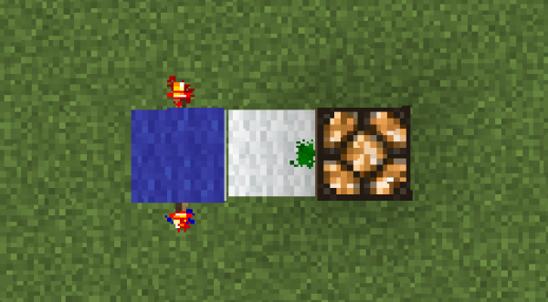

Redstone mechanics
The LogicGates plugin enhances Minecraft’s native Redstone system by introducing customizable logic gates. These gates function similarly to digital electronics but are fully integrated with Minecraft’s Redstone mechanics. This documentation details how the plugin utilizes and extends Redstone behavior.
Logic Gate Creation
Logic gates in the plugin are built using Redstone-compatible components. The creation process is as follows:
-
Base Block Requirement:
A glass block must be used as the foundation for any logic gate. -
Indicator Component:
A carpet is placed atop the glass block. The carpet’s color determines the type of logic gate being created (e.g., AND, OR, NOT, XOR, NAND, NOR, XNOR, IMPLICATION, TIMER, RS_LATCH). -
Initialization:
Once a carpet is placed on a glass block, the plugin verifies that the carpet color corresponds to a defined logic gate. If confirmed, a new gate is instantiated with a default orientation (facing NORTH).
Gate Structure and Redstone Connections
Each logic gate consists of distinct Redstone input and output locations, which determine how signals are received and transmitted.
Facing and Orientation
- Facing:
The gate’s orientation defines the location of its inputs and output.
By default, the gate faces NORTH.
Inputs
-
Input Locations:
Input 1: Located on the left side relative to the gate’s facing.
Input 2: Located on the right side relative to the gate’s facing. -
Redstone Signal Sources:
The inputs can receive power from:- Redstone Wire
- Redstone Torch
- Redstone Block
- Other redstone signals: comparator, repeater, etc.
Output
-
Output Location:
The output is positioned at the front of the gate (relative to its facing). -
Output Applications:
The output can drive various Redstone-compatible blocks, such as:- Buttons, levers, observers (recommended for all types)
- Redstone Lamp (not recommended for inverted logic gates e.g. NAND)
- Doors, Trapdoors, and other Redstone-controlled devices (not recommended for inverted logic gates e.g. NAND)
- Redstone Wire (not recommended)
- Repeater, comparator (not recommended)
Logic Operation
The output state of each gate is computed based on the gate type and the current states of its inputs. Below are the standard logic functions supported:
-
AND Gate:
- Operation: The output is powered only if both inputs are active.
- Formula:
Output = Input1 && Input2
-
OR Gate:
- Operation: The output is powered if at least one input is active.
- Formula:
Output = Input1 || Input2
-
NOT Gate:
- Operation: With a single input, the output is powered when the input is not active.
- Formula:
Output = !Input1
-
XOR Gate:
- Operation: The output is powered if only one of the two inputs is active.
- Formula:
Output = Input1 != Input2
-
NAND Gate:
- Operation: The output is powered when not both inputs are active.
- Formula:
Output = !(Input1 && Input2)
-
NOR Gate:
- Operation: The output is powered only when none of the inputs are active.
- Formula:
Output = !(Input1 || Input2)
-
XNOR Gate:
- Operation: The output is powered if both inputs are in the same state (either both active or both inactive).
- Formula:
Output = Input1 == Input2
-
IMPLICATION Gate:
- Operation: The output is powered if Input1 is inactive or Input2 is active.
- Formula:
Output = !Input1 || Input2
-
TIMER Gate:
- Operation: The output alternates its state at fixed time intervals, regardless of the input states.
- Note: The interval is configurable via plugin commands.
-
RS_LATCH Gate:
- Operation: This gate acts as a memory element.
- When Input1 is activated, the output is set to
true. - When Input2 is activated, the output is set to
false. - If both inputs are active, the output retains its previous state.
- When Input1 is activated, the output is set to
- Operation: This gate acts as a memory element.
Redstone Signal Propagation
Signal Update Process
When a nearby Redstone signal changes, the plugin processes the change in several steps:
-
Detection:
The plugin listens for Redstone-related events (such as a change in a Redstone torch, wire, or block) near a logic gate. -
Recalculation:
The new states of the inputs are evaluated against the logic function of the gate. The output state is then recalculated. -
Output Update:
The gate’s output block is updated accordingly — this may involve powering connected objects.
Special Redstone Behaviors
- Redstone Lamps:
These will light up or turn off based on the gate’s output.
Moving the Output Signal One Block Further
The plugin allows an interesting trick. When you have a gate and place any carpet (material CARPET) on its output, the gate will shift the output signal by one block, enabling you to move the signal.
